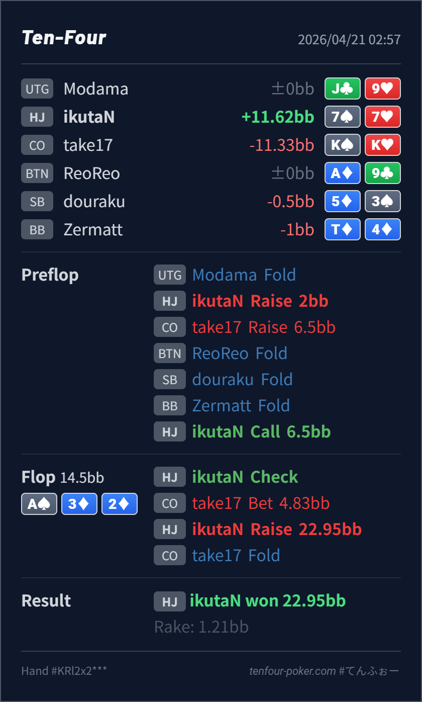

Preflop
良い7♠7♥ は HJ open-call range の自然な continue です。4bet より call の方が収まりやすいです。
主論点は、HJ open-call で入った 3bet pot の A♠ 3♦ 2♦ に対して、7♠7♥ を flop の check-call bucket に置くか、check-raise bluff まで押し上げるかです。結論は、preflop の continue は自然ですが、flop の raise はかなり前のめりです。CO の small c-bet range にはまだ AK/AQ、AA、KK-QQ、diamond 付きの broadway が厚く残り、7♠7♥ は showdown value を持つ一方で強い continue を block できません。まずは check-call で range を守る方が基準線として安定します。
7♠7♥K♠K♥A♠ 3♦ 2♦7♠7♥ はこの node で raise より call に置きたい hand です。77-QQ、AQs-AJs、suited broadway が残り、CO には AA/KK/QQ/AK/AQ を中心に強い塊が残ります。A♠ 3♦ 2♦ は low board でも、range 全体ではまだ CO 側がかなり強いです。33%pot 近い c-bet は「弱いから小さい」ではなく、A-high board で広く打ちやすい size です。ここに 7♠7♥ で raise を返すと、KQ/QJ のような air は落ちても、続くのは Ax、overpair、diamond draw 寄りに偏りやすいです。7♠7♥ は no-diamond の middle pair で、相手の give-up や broadway air に勝っている帯です。showdown value がある hand を大きい bluff に変えるより、まず call で bluffs を残す方が収まりやすいです。K♠K♥ が fold して結果は良く出ていますが、この 1 サンプルで line を正当化しない方が安全です。基準線としては、KK/QQ まで含めて相手がしっかり continue する前提で組み立てたい spot です。7♠7♥K♠K♥2BB, CO 3bet 6.5BB, HJ callA♠ 3♦ 2♦4.83BB, HJ raise 22.95BB, CO foldK♠K♥ fold
良い7♠7♥ は HJ open-call range の自然な continue です。4bet より call の方が収まりやすいです。
A♠ 3♦ 2♦raise しすぎ7♠7♥ は middle pair の showdown value で、air には勝つ一方、強い continue を block せず、raise 後の barrel も作りにくい hand です。
| 論点 | その場で起きがちな見え方 | どこがズレたか | 次回の基準 |
|---|---|---|---|
| A-high small c-bet への反応 | 1/3pot なので自動 c-betっぽく見え、ここで押し返せばすぐ取り切れそうに見える | 3bet pot の A-high board では、小さい size でも CO 側の value 密度はまだ高いです。7♠7♥ は Ax も diamond continue も block せず、raise の説得力を上げる要素が少なめです。 | small c-bet を受けたら、まず 相手の bet size より その range が何を残しているか を先に確認する |
| medium pair の扱い | low board なので pocket pair を守りたくなり、今すぐ fold equity を取りにいきたくなる | 7♠7♥ は弱すぎて即 bluff に回す hand ではなく、逆に強すぎて raise value でもありません。showdown value がある middle pair を大きい raise にすると、bluff を落として強い continue だけを残しやすいです。 | 3bet pot で middle pair を持ったら、raise して何に call されたいか が曖昧な限りは call bucket を先に疑う |
| ストリート | その時点の見え方 | 実ハンドの位置づけ | 評価 | その場の一手 |
|---|---|---|---|---|
| Preflop | CO の 3bet range は TT+, AQ+, suited broadway の強め構成です。HJ 側は pocket と suited broadway を中心に continue します。 | 7♠7♥ は HJ open-call range の自然な continue です。4bet より call の方が収まりやすいです。 | 良い | 6.5BB に対する call は自然です。ここは問題ありません。 |
Flop A♠ 3♦ 2♦ | CO の small c-bet には AK/AQ、AA、KK-QQ、diamond 付き broadway、A5s などがまだ広く残ります。HJ に set はあるものの、range 全体ではまだ CO が優位です。 | 7♠7♥ は middle pair の showdown value で、air には勝つ一方、強い continue を block せず、raise 後の barrel も作りにくい hand です。 | raise しすぎ | default は check-call 寄りです。少なくとも raise より call を優先し、より強い draw や blocker を持つ combo に raise を譲りたいです。 |
| Turn | ||||
| River |
1/3pot = 弱い と受け取らない方が安定します。小さい size でも相手 range はまだかなり強いです。bluff を残したい hand か を見ると raise の打ちすぎを減らせます。何を block して、何を fold させ、turn 以降をどう走るか まで見えている combo に寄せた方がぶれにくいです。7♠7♥ のような no-diamond middle pair より、diamond draw やより強い blocker を持つ combo に寄せる方が次の barrel を作りやすいです。K♠K♥ fold は相手側の overfold サンプルとしては面白いですが、基準線まで一緒に loosen に寄せない方が長期では安定します。